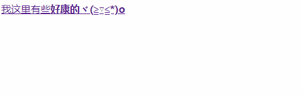
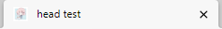

没错，今天我们来说的就是前文中提到的head区域
而这个区域可以可以引用脚本、指示浏览器在哪里找到样式表、提供元数据(by以前的自己不知道在哪里抄下来的地方)
这个区域里的一些标签得用到CSS和JS这些的，不过因为这是一个html的笔记而且也没学，所以尽量能挑与html有关的来说，其他用途的话以后可能会新开一个来补充（或者就在这篇文章下面修改，说不定你们看到的就是我改过后的版本了，欸我是不是又挖了一个坑(。_。)）
还是和往常说一下这样，这是自用的笔记啦，如果我说的有不对的话可以在评论中告诉我，这对我有很大的帮助，谢谢啦(/≧▽≦)/
title标签
把这个标签放在第一个是因为…他实在是太简单了XD
很顾名思义地来说就是设置文档的标题=网页的标题，差不多是这样<title>随便写</title>
所以这个真的没有什么好讲的…吧OUO
base标签
base与a颇有几分相似，但是bases是设定基底的链接地址/链接目标，这个“基底”的意思也就是给后面的例如<a>和<img>标签前面默认添加了一个链接，在写作的时候可以方便很多(～￣▽￣)～<base>标签同样也可以使用<herf>与<target>这两个属性
例如我写了以下这几段字
1 |
|
而运行结果就是，虽然我没有把全部的链接都写上，但是我还是可以打开对应网站，这是因为在head里我用base标签来给他们前置了一个URL（不要只写域名，我常常吃这亏TAT），而a所超链接的网址正是herf里的内容+前置的URL，所以顺利地打开了对应的网址,就像下面这样(感觉讲了很多废话…)

简而言之就是可以在a或者img的标签前面加链接的标签啦,而且可以和a使用一样的属性
link标签
这个标签常用于链接外部的CSS样式表，但是先不聊这个，它还有一个作用就是给网址加上icon
就像这个样子<link rel="icon" href="/favicon.ico">(favicon.ico这个名字不能变，需要给文件重命名…)
效果就是这样啦

这个用法也是很简单啦，不过需要背一下这个code啦。rel这个属性还是搞不懂在讲什么…
meta标签
去年的时候…元宇宙这个词火到小扎都把公司改名叫”meta”了
所以meta就是”元”的意思,而meta标签的意思则是表示这个网站的元信息,元信息可以当作是一个简介或者梗概,就比如说零食后面贴的生产日期之类的就是元信息啦,而理所当然的,这个标签可用的属性就有点多了,但大多数都很好记，所以以下就快速说一下吧( •̀ ω •́ )✧
(此时的我不知道，自己开了一个大坑，现在回来看就觉得自己好作(っ °Д °;)っ)
charset属性
说明这个文档所用的编码（可以理解成把文字变成0和1的桥梁），一般是UTF-8，用法是这样的
<meta charset="utf-8">
name属性
真的是万恶之源，是单纯”顾名思义“技能解决不了的东西
看起来多数都和SEO(搜索引擎优化)有关，所以这些东西我暂时找不到效果，那么我尽量说的能够理解吧
author
顾名思义，是说明这个文档的作者是谁(写文章却没有写名字是个很严重的错误呢( •̀ ω •́ )✧)，用法如下<meta name="author" content="Akuzyo">description
顾名思义x2（你还要用几个顾名思义啊喂(#`O′)），说明这个文档的摘要是什么，用法如下<meta name="description" content="A Dream Traveler">我看有的网页说甚至可以不用写description，因为google的爬虫可以搞定，不过我认为写一下还是不亏嘛OUO
keywords
顾名思义x3，说明该文档的关键字是什么，因为Google已经不看keywords所以可以不用这个属性，所以也不再细说什么，用法如下<meta name="keywords"content="talking,sleeping">以上就是比较简单的属性了，后面开始难度将上升亿个档次
viewport
不知道大家会不会很好奇，手机上的网页是怎么做到在不同设备上显示出同样的效果的，和这个属性值会有一定的关系
viewport会说明浏览器该怎么调整移动设备网页显示长宽的方式，常见的用法如下<meta name="viewport" content="width=device-width, initial-scale=1.0">解释以下content里的内容好啦
width=device-width的意思就是宽度与设备屏幕宽度等宽的意思顾名思义地翻译下来就是宽度=设备宽度的意思呢initial-scale=1.0的意思就是刚进网页的缩放程度就是100%，不大不小没错，content里还可以填值，而可以填选的值共有五个，除了前面提到的两个以外，还有三个值，他们分别是
- height 高度
- maximum-scale 允许使用者能缩放的最大比例
- minimum-scale：允许使用者缩放到的最小比例
- user-scalable：使用者是否可以手动缩放。
如果想让使用者不能缩放的话有两个方式，我就放在下面啦，能猜到为什么要这么写吗?
<meta name="viewport" content="width=device-width, initial-scale=1, user-scalable=no"><meta name="viewport" content="width=device-width, initial-scale=1, minimum-scale=1, maximum-scale=1">robots
是可爱的小robot(/≧▽≦)/这个robot能帮助我们退散搜索引擎的收录（不过有些时候不会让人如意就是了，搜索引擎有时候还是会照样收录的…）
content里面可以写以下这些值- noindex: 不让这个网页出现在搜索结果中
- nofollow: 不要搜索这个网站里的任何链接
- none: 相当于 noindex, nofollow 的效果
- noarchive: 不要在搜索結果中显示快照
这是我个人认为比较不怎么重要的值- nosnippet: 不要在搜索结果中显示这个网页的文字摘要或缩略图
notranslate: 不要在搜索结果中提供这个网站的翻译- noimageindex: 不為這個網頁上的圖片建立索引
unavailable_after: [date/time]: 在指定的日期/時間後不在搜索结果中显示这个网站
- all: 预设值，相当于 index, follow
如果想让自己写的网站不要被咕噜咕噜收录的话，可以写成下面这样
<meta name"robot" content="noindex,nofollow">本来想在content里写=”none”的，但是看到大家都不这么写…如果想被咕噜咕噜收录的话就可以把no去掉就行了，或者什么也不写也可以~
property 属性（能查到能用的大概只有og…）
og（Open Graph）
当要把一个网站分享到社交媒体的时候，og会告诉社交媒体会显示出什么，比如这个网站的摘要是什么?缩略图是哪个？源网站地址是哪个？等等等…（但是有些东西又是name出现过的…)
用法一般是这样<meta property="og：xxx" content="xxx">而og里的xxx可以填以下这些…
- title 标题
- url 链接
- image 缩略图
- site_name 网站名字
- description 网站描述
- type 网站类型
差不多就是这些啦，如果想要看到自己的网站分享到社交网站是什么样子的话就在这里试着做一下预览吧( •̀ ω •́ )✧
好了，差不多就是这个样子啦（累瘫）有些日子里就在看一些网站的head里面有什么，才发现只有自己学的那点的那点根本不够用啊(＃°Д°)